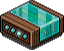
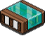
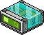
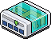

Schnelle Tutorials
AFK-Sitze
Wireds:

WIRED Auslöser: Effekt wiederholen

WIRED Auslöser: Kollision

WIRED Effekt: Möbelrichtung ändern

WIRED Effekt: Zu Möbelstück teleportieren

WIRED Bedingung: Auslösender Habbo steht auf Möbelstück
Allgemein:
AFK-Sitze sind in Habbo ziemlich beliebt. Die meisten Hilfsanfragen, die ein Wired-Ersteller erhalten wird, haben in irgendeiner Form mit genau diesem Thema zutun. AFK-Sitze werden gerne in Räume eingebaut, um die Useranzahl hochzuhalten und Dauergäste einen festen Platz zu bieten. Oft wird der Teleport-Effekt verwendet, damit der Habbo Avatar "wach" bleibt und nicht den Raum verlässt.
Einstellung:
Damit der Teleport-Effekt verwendet werden kann, muss es zuerst einen geeigneten Auslöser dafür geben. In diesem Fall passt Kollision am besten, da wir User indirekt dazu bringen auszulösen. Dann bleibt die Frage, wie Kollision überhaupt auslöst. Damit eine Kollision stattfinden kann, muss es etwas geben, dass mit etwas (oder jemand) anderem kollidiert. Zum einen haben wir den Habbo User, zum anderen brauchen wir ein passendes Möbelstück. Kollision reagiert auf verschiedene Bewegungs-Effekte, z. B. Angriff oder Flucht. Wir benötigen aber ein Bewegungs-Wired, welches eine feste Richtung beibehält. Daher kommt nur noch der Effekt "Möbelrichtung ändern" infrage (der Effekt "bewegen und drehen" besitzt keine Kollisionsfähigkeiten!). Das passende Möbelstück kann eigentlich alles sein, was eine Größe von 1 Mal 1 (= 1 Bodenfläche) besitzt. Für folgende Situation wird eine AFK-Einstellung gezeigt:
AFK-Sitze für Sofas, nebeneinanderliegende Stühle und Einzelplätze. Zunächst wird der Fall mit nebeneinanderliegenden Stühlen gezeigt.
Der linke Stuhl wird markiert und so eingestellt, dass er sich gegen den anderen Stuhl zu bewegen würde. Da die Bewegung blockiert wird, kann man im Wired nun eine Extraeinstellung vornehmen, was dann passieren soll. Es wird "Warten" ausgewählt. So bleibt der Stuhl an Ort und Stelle. Das gleiche wird beim anderen Stuhl eingestellt mit einem der anderen "Möbelrichtung ändern".
Jetzt kollidieren beide Stühle gegeneinander. Ausgelöst werden die Richtung ändern Wireds durch Effekt wiederholen (alternativ auch durch Periodisch lang). Dieser stellt den Timer dar, in welchem Intervall (Zeitabständen) ein Teleport-Effekt erfolgt. Die empfohlene Einstellungszeit im Effekt wiederholen/Periodisch lang beträgt 1 bis 3 Minuten.
Wenn sich nun User auf diese Sitze setzen, werden sie automatisch vom Kollisionsauslöser erkannt. Daher muss dieser Auslöser auch nicht eingestellt werden. Wenn Kollision aktiviert wird, sollen die Teleport-Effekte ausgelöst werden. Damit die User aber an ihren Plätzen bleiben, muss eingestellt werden, dass sie immer zum selben Stuhl teleportiert werden. Jetzt haben wir aber gelernt, dass Kollision automatisch funktioniert und damit auch nicht unterscheiden kann, an welchem Platz jemand kollidiert wurde. Daher benötigen wir eine Bedingung, die dem Kollisions-Stapel nur erlaubt auszulösen, wenn ein User an einem bestimmten Ort sitzt. Die Kollision kann dann sozusagen nicht mehr den gesamten Raum wahrnehmen, sondern konzentriert sich nur noch auf die eingestellte Stelle. Dies kann mit der Bedingung "Auslösender Habbo steht auf Möbelstück" erreicht werden.
Der linke Stuhl wird ausgewählt, sodass sich der Stapel nur auf den Stuhl bezieht. Wenn Dort ein User kollidiert, dann wird nur er den Teleport-Effekt auslösen, der im selben Stapel liegt.
Im Teleport-Wired wird derselbe Stuhl ausgewählt. So bleibt der User auf seinen Stuhl. Im 2. Stapel wird genau das gleiche eingestellt für den rechten Stuhl.
Was aber, wenn nur ein Einzelplatz als AFK-Sitz eingestellt werden soll? Auch dann gilt, dass der Stuhl unter Kollision stehen muss. Statt eines zweiten Stuhls kann ein anderes Möbel in der Größe verwendet werden. Hier dient als Beispiel die Vase als Kollisionsmöbel.
Die Kollision zur Vasen-Richtung (3. Pfeil von links unter "Start direction") wird nicht benötigt, da dort kein User wäre, der kollidiert werden könnte. Dadurch wird auch ein Kollisionsstapel gespart. Es wird nur ein Kollisionsstapel für den Einzelplatz benötigt und genauso eingestellt wie bei den anderen 2 Stapeln. Bedingungs- und Teleport-Wired sind beide auf den Einzelplatz fixiert.
Etwas herausfordernder wird es mit einem Sofa und anderen Sitz-Möbeln mit mehreren Plätzen. Das 1. Problem ist der Teleport-Effekt. Wird das Sofa ausgewählt, dann landet man nur auf einen der beiden Plätze.
Etwas herausfordernder wird es mit einem Sofa und anderen Sitz-Möbeln mit mehreren Plätzen. Das 1. Problem ist der Teleport-Effekt. Wird das Sofa ausgewählt, dann landet man nur auf einen der beiden Plätze.
Das 2. Problem wäre die Bedingung, da auch dieser den Sofa als ganzes fixiert und somit die Plätze nicht getrennt eingestellt wären. Das bedeutet der User links auf dem Sofa könnte nicht von dem User rechts unterschieden werden und sie hätten damit keinen festen Platz an dem sie bleiben könnten. Sie würden mit der Zeit zwischen den Plätzen auf den Sofa wechseln - zumindest, wenn es das Teleport-Problem nicht gäbe. Mit dem Teleport-Problem ist der linke Platz nutzlos, da jeder zum rechten Platz befördert wird.
So würden nur immer mehr User ineinander sitzen und nicht jeder könnte von der Kollision erfasst werden (meistens nur derselbe User). Deshalb ist es sehr wichtig, dass User bei einem AFK-System niemals ineinander geraten. Wie kann dieses Problem nun umgangen werden? Einfache Antwort: Wir benötigen 1 Mal 1 große Möbel, die unter die Sofas kommen. Man könnte sagen, dass diese 1 Mal 1 Möbel die eigentlichen Sitze sind, denn es wird so eingestellt wie am Anfang mit den zwei Stühlen.
Statt Druckplatten können auch unsichtbarere Möbel genutzt werden. Die Platten wurden nur verwendet, damit die Einstellung leichter zu verfolgen ist. Manche nutzen gerne Blobs, die im Schatten kaum zu sehen sind, da sie selbst im deaktivierten Zustand dunkel sind. Natürlich hätte man noch die Kollision separat einbauen können, sodass hinter den Sofa Möbel stehen, die zum Sofa hin kollidieren, aber es bietet sich an direkt die Möbel zu nehmen, die unter dem Sofa kommen. Damit wären die wichtigsten Fälle mit dieser AFK-Methode erklärt.
Hast du gewusst?
Der idle-Effekt (ZZZ) erscheint nach 5 Minuten und sobald dieser erscheint bleiben noch 10 Minuten bis man aus dem Raum geworfen wird. Insgesamt dauert es also 15 Minuten bis ein User den Raum automatisch verlässt. Wenn der Command :idle verwendet wird, dann werden die 5 Minuten übersprungen und man fliegt bereits nach 10 Minuten raus.